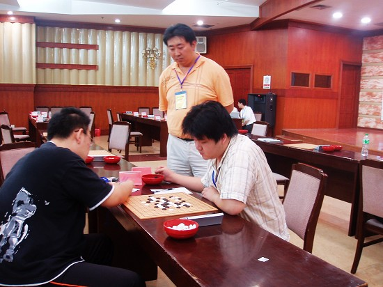
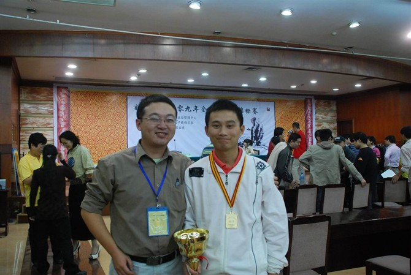
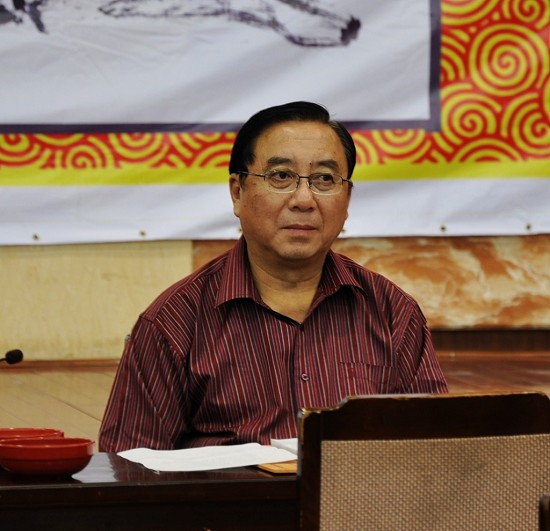
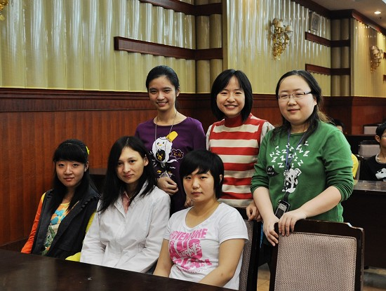
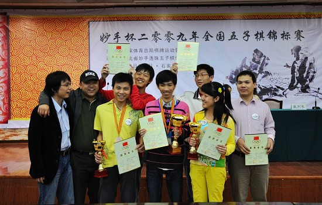
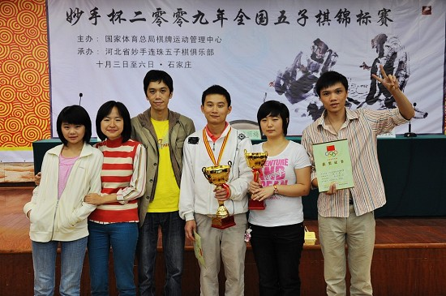
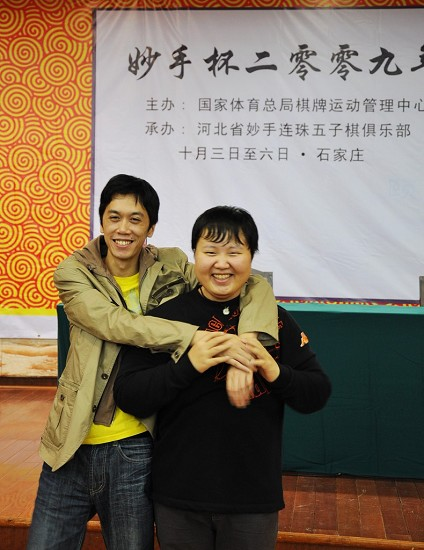

2009全国五子棋锦标赛的几张照片
首页
五子棋新闻
#1 2009全国五子棋锦标赛的几张照片 作者：有志青年 发表时间：2009-10-8 9:52:57

像吗？

全国冠军vs世界冠军 肖裁判长亲自执裁
#2 Re:2009全国五子棋锦标赛的几张照片 作者：花月痕 发表时间：2009-10-8 13:45:17
就两张呀~太少了点吧
#3 Re:2009全国五子棋锦标赛的几张照片 作者：蛋老师 发表时间：2009-10-8 13:57:07
米兰和聂老师有点像
#4 Re:2009全国五子棋锦标赛的几张照片 作者：黄药师 发表时间：2009-10-8 16:18:30

我来补充一张。
怎么看起来得到冠军的是我不是高飞啊！
高飞看起来像被我抓了七八个禁手。
#5 Re:2009全国五子棋锦标赛的几张照片 作者：茗弈小刀 发表时间：2009-10-8 16:41:43

#6 Re:2009全国五子棋锦标赛的几张照片 作者：王志伟123 发表时间：2009-10-8 17:22:24
黄药师灿烂的笑容！^_^
#7 Re:2009全国五子棋锦标赛的几张照片 作者：慕容晓文 发表时间：2009-10-8 18:59:47
呵呵……照片少了点
#8 Re:2009全国五子棋锦标赛的几张照片 作者：极地剑客 发表时间：2009-10-9 0:17:03
就2张啊~赶快更新~
#9 Re:2009全国五子棋锦标赛的几张照片 作者：小丸.net 发表时间：2009-10-9 8:49:24
279张照片已经发到有志的QQ里面,相信不日能够贴出来让大家分享了.
#10 Re:2009全国五子棋锦标赛的几张照片 作者：有志青年 发表时间：2009-10-9 12:56:58

此次比赛的总裁判长 仇庆生

女子前六

炫飞合影

湖北合影

人见人爱的“牛牛”，很喜欢下盲棋，用肖斌的话说“如果你能坚持到50手不败，就让你全国赛上表演”可目前的记录是42手。
#11 Re:2009全国五子棋锦标赛的几张照片 作者：方圆之外 发表时间：2009-10-9 13:16:22
感觉牛牛算是挺不错的棋手。。只是有会也犯一些挺低级的错误。
#12 Re:2009全国五子棋锦标赛的几张照片 作者：极地剑客 发表时间：2009-10-9 14:31:20
湖北队最左边的MM是谁啊????
#13 Re:Re:2009全国五子棋锦标赛的几张照片 作者：我就不信注册不上 发表时间：2009-10-9 14:48:44
引用：
原文由 极地剑客 发表于 2009-10-9 14:31:20 :
湖北队最左边的MM是谁啊????
是刘询
#14 Re:Re:Re:2009全国五子棋锦标赛的几张照片 作者：屏蔽 发表时间：2009-10-9 16:41:22
引用：
原文由 我就不信注册不上 发表于 2009-10-9 14:48:44 :
引用：
原文由 极地剑客 发表于 2009-10-9 14:31:20 :
湖北队最左边的MM是谁啊????
是刘询
是刘恂~~
#15 Re:2009全国五子棋锦标赛的几张照片 作者：极地剑客 发表时间：2009-10-9 17:13:13
 美女呀~楼上两位都认识她呀?
美女呀~楼上两位都认识她呀?
#16 Re:2009全国五子棋锦标赛的几张照片 作者：屏蔽 发表时间：2009-10-9 17:38:18
不认识
这才是悲剧
#17 Re:Re:2009全国五子棋锦标赛的几张照片 作者：我就不信注册不上 发表时间：2009-10-9 17:42:33
引用：
原文由 极地剑客 发表于 2009-10-9 17:13:13 :
美女呀~楼上两位都认识她呀?
我认识，见过她
#18 Re:Re:Re:2009全国五子棋锦标赛的几张照片 作者：屏蔽 发表时间：2009-10-9 17:43:38
引用：
原文由 我就不信注册不上 发表于 2009-10-9 17:42:33 :
引用：
原文由 极地剑客 发表于 2009-10-9 17:13:13 :
美女呀~楼上两位都认识她呀?
我认识，见过她
见过你就算认识么……
那我也认识…………
我认识半年了~~
~~
#19 Re:2009全国五子棋锦标赛的几张照片 作者：慕容晓文 发表时间：2009-10-9 18:04:41
刘恂啊，很可爱的小MM~~~
牛牛是谁？
#20 Re:2009全国五子棋锦标赛的几张照片 作者：屏蔽 发表时间：2009-10-9 18:28:09
牛牛啊，很可爱的小……
（FY
（10楼最后一张你看是谁
#21 Re:2009全国五子棋锦标赛的几张照片 作者：忧郁的双眼 发表时间：2009-10-9 18:34:45
我是来看美女的！
#22 Re:Re:2009全国五子棋锦标赛的几张照片 作者：小丸.net 发表时间：2009-10-9 19:45:41
引用：
原文由 慕容晓文 发表于 2009-10-9 18:04:41 :
刘恂啊，很可爱的小MM~~~
牛牛是谁？
牛牛都不认识，很漂亮的小帅哥，江苏的超级外援
#23 Re:2009全国五子棋锦标赛的几张照片 作者：牛牛 发表时间：2009-11-5 22:57:30
见过就算认识的话,那我和刘恂可以说熟悉半年了 
#24 Re:2009全国五子棋锦标赛的几张照片 作者：岳麓小棋皇 发表时间：2009-11-6 8:45:03
 我和牛牛认识6年了
我和牛牛认识6年了